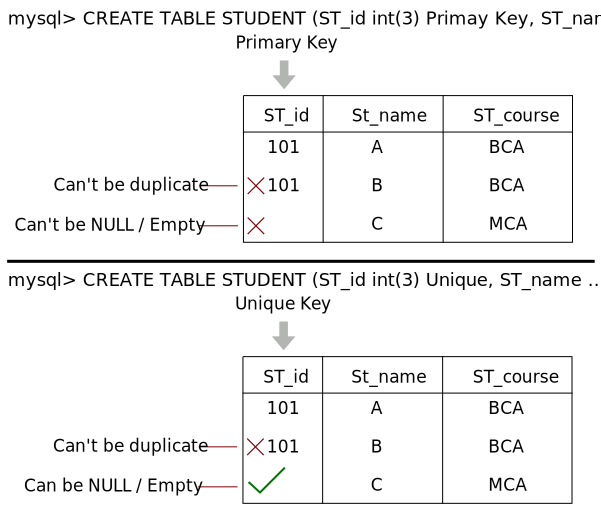

Relational Data Model and Relational Algebra
Introduction to Relational Model
- The relational model serves as the theoretical foundation for relational databases.
- At its core, the relational model of data is built on the concept of relations.
- A "Relation" is a mathematical concept that draws from set theory.
- The relational model was originally proposed by E.F. Codd for IBM in 1970 as a means to organize and manage data using relations or tables.
- In practical terms, the relational model defines how data is stored within relational databases.
These databases organize data into tables, also known as relations.
- Once the conceptual model of a database is designed using tools like Entity-Relationship (ER) diagrams, the next step is to convert this conceptual model into the relational model, which can then be implemented using various Relational Database Management System (RDBMS) languages.
- RDBMS languages encompass a range of software systems such as Oracle, SQL, MySQL, and more.
What is RDBMS?
- RDBMS stands for Relational Database Management System, and it forms the basis for SQL and most modern database systems, including MS SQL Server, IBM DB2, Oracle, MySQL, and Microsoft Access.
- An RDBMS is a type of Database Management System (DBMS) that is founded on the principles of the relational model, initially introduced by E.F. Codd.
- Popular RDBMS options today include:
- DB2 and Informix Dynamic Server (both from IBM)
- Oracle and Rdb (from Oracle Corporation)
- SQL Server and MS Access (from Microsoft)
Relational Model Concepts
- The relational model represents data in the form of tables, consisting of columns and rows.
- Each individual row within a table is referred to as a "tuple." For example, in a table named "Students," each row represents a student's information.
- Every column in a table has a specific name or attribute. In a table named "Employees," attributes might include "EmployeeID," "FirstName," and "LastName."
- Relation: A relation is essentially a table, characterized by its columns and rows. For instance, a "Products" table can be a relation.
- Attribute: An attribute is a named column within a relation. In a "Customers" table, "CustomerID" and "Email" are attributes.
- Domain: A domain represents the set of permissible values for one or more attributes. For instance, the domain for the "Gender" attribute in a "Persons" table could include values like "Male" and "Female."
- Tuple: A tuple, on the other hand, is a single row within a relation. In a "Orders" table, each order made by a customer is a tuple.
- Relation Schema: A relation schema specifies the name of the relation and its attributes. The schema for a "Books" table might include "BookID," "Title," and "Author."
- Relation Instance (State): A relation instance is a finite collection of tuples. For example, the current orders placed by customers in an "Online Orders" table represent the relation instance.
- Degree: Degree refers to the total number of columns or attributes present within a relation. If a "Vehicles" table has attributes like "Make," "Model," and "Year," its degree is 3.
- Cardinality: Cardinality is the total number of rows within a table, representing the size or extent of the relation. If there are 1000 products in a "Products" table, its cardinality is 1000.
- Relation Key: A relation key is one or more attributes within a row that can uniquely identify that row within the relation. In a "Students" table, "StudentID" can serve as the primary key.
- Tuple Variable: A tuple variable stores data corresponding to a record or row within a table. For instance, when querying a database, a tuple variable might be used to temporarily store and manipulate a specific row's data.

Properties of the Relational Model
- Unique Relation Names: In a relational database, each table (relation) must have a unique name. For example, you cannot have two tables both named "Customers."
- Unique Tuples (Rows): Within a relation, each tuple (row) must be unique, meaning there are no duplicate rows. This ensures that each row represents distinct data. For instance, if you have a "Students" table, each student's record should be unique.
- Uniform Data Domains: Entries in any given column must belong to the same domain. A domain defines the set of allowable values for an attribute. For instance, if you have a "Gender" column, all entries in that column should be either "Male" or "Female," ensuring data consistency.
- Unique Attribute Names: Each attribute (column) within a relation must have a unique name. This helps in unambiguously identifying and accessing specific attributes. For example, you cannot have two columns both named "DateOfBirth" in the same table.
- Order Independence: The order of columns or rows in a relation is irrelevant. Relations are considered unordered sets of data. This means you can retrieve and manipulate data without worrying about its physical storage order. For example, whether "Name" comes before "Age" in a table does not affect the data's integrity.
- Atomic Attribute Values: In the context of the relational model, "atomic" means that each cell (intersection of a row and column) of a relation contains exactly one value. Atomic attribute values are indivisible or cannot be further broken down into smaller parts. For instance, if you have an "Address" column, it should contain a single complete address, not components like street, city, and zip code separated into multiple cells.
Integrity Constraints over Relations
- Understanding Integrity Constraints: When we enter values into a table within a relational database, it's crucial to ensure that the data remains valid, accurate, and unique. To achieve this, we follow specific rules and conditions known as constraints. Integrity, in this context, refers to the maintenance of data accuracy and consistency, which is made possible by adhering to these sets of rules and constraints.
- Ensuring Data Accuracy: Integrity constraints play a pivotal role in guaranteeing the accuracy and consistency of data in a relational database.
- Rule-Based Guidelines: Integrity constraints are essentially sets of rules that a database is not allowed to violate. These rules serve as guidelines that govern the data within the database.
- Application to Attributes and Relationships: Constraints can be applied at the level of individual attributes or to the relationships between tables. They help maintain data integrity at both the micro and macro levels of the database.
- Preserving Data Consistency: Integrity constraints ensure that any changes made to the database, such as updates, deletions, or insertions, by authorized users do not result in a loss of data consistency. In other words, they act as safeguards against accidental damage to the database's integrity.
- Example: Consider a scenario where a database stores information about blood groups. An integrity constraint in this case could specify that the blood group attribute must contain values such as 'A,' 'B,' 'AB,' or 'O' only. Any other values would be considered invalid. This constraint ensures that the database maintains accurate and meaningful blood group data.
Types of Integrity Constraints
- Domain Constraint: Domain constraints are applied to attributes. They define the permissible values for an attribute. For example, an attribute "Age" may have a domain constraint specifying that it can only contain positive integers.
- Entity Integrity Constraint: Entity integrity constraints are also applied to attributes. They ensure that each tuple (row) within a relation has a unique identifier, often referred to as a primary key. This constraint guarantees that no duplicate rows exist within the relation.
- Referential Integrity Constraint: Referential integrity constraints come into play when establishing relationships between tables. They enforce the consistency of data between related tables. For example, when one table references another through a foreign key, referential integrity constraints ensure that the foreign key values match the primary key values in the referenced table, preventing orphans or invalid references.
- Key Constraint: Key constraints, similar to entity integrity constraints, are applied to attributes. They specify that a particular attribute or combination of attributes serves as a unique identifier for tuples within a relation. This unique identifier is often referred to as a candidate key or primary key.
Domain Constraints
- Defining Valid Attribute Values: Domain constraints play a crucial role in defining the permissible or valid set of values for an attribute within a relational database. For example, if you have an attribute like "Age," the domain constraint might specify that valid values must be positive integers. Similarly, for an attribute like "Name," the domain constraint might define that valid values are characters from 'A' to 'Z,' excluding numbers or other special characters.
- Range of Data Types: The data type of a domain can encompass a wide range of possibilities, including strings, characters, integers, times, dates, currencies, and more. It's essential to ensure that any value assigned to an attribute falls within the defined domain for that attribute.
- Defining During Table Creation: Domain constraints are typically established when defining the structure of a table. When creating a table, database designers specify the data types and constraints for each attribute, ensuring that data integrity is maintained throughout the database's lifecycle.
Entity Integrity Constraints
- Ensuring Primary Key Not Null: Entity integrity constraints play a fundamental role in ensuring that the primary key value within a relational database cannot be null. The primary key serves as a unique identifier for individual rows within a relation, and if it were allowed to have null values, it would compromise our ability to distinguish and identify those rows accurately.
- Importance of Identifiable Rows: Consider a scenario where you have a table storing information about employees, and the "EmployeeID" is the primary key. If the "EmployeeID" field could have null values, it would become impossible to uniquely identify and differentiate employees. Entity integrity constraints address this issue by mandating that primary keys must always contain a valid, non-null value.
- Null Values in Non-Primary Key Fields: While entity integrity constraints prohibit null values in primary key fields, it's important to note that tables can still contain null values in other non-primary key fields. This allows flexibility in representing missing or unknown information for certain attributes without affecting the uniqueness and integrity of the primary key.
Referential Integrity Constraints
- Definition and Scope: Referential integrity constraints are rules specified between two tables within a relational database.
- Enforcement Through Foreign Keys: These constraints come into play when a foreign key in one table references the primary key of another table. This ensures that relationships between tables are maintained accurately.
- Key Principle: In the context of referential integrity constraints, when a foreign key in Table 1 references the primary key in Table 2, it dictates that every value of the foreign key in Table 1 must either match an available primary key value in Table 2 or be null.
- Rules for Referential Integrity:
- Deletion Restriction: You cannot delete a record from a primary table if matching records exist in a related table. This safeguard prevents accidental data loss in related tables due to deletion in the primary table.
- Modification Allowance: You can change the primary key value in the primary table, even if it has related records. This flexibility allows for updates without breaking referential integrity.
- Insertion Validation: You cannot insert a value in the foreign key field of the related table if that value does not exist in the primary key of the primary table. This constraint ensures that relationships between tables are based on valid and existing data.
- Null Values for Unrelated Records: However, you can enter a null value in the foreign key field, signifying that the records are unrelated. This accommodates scenarios where a record in one table may not have a corresponding entry in another table.
Key Constraints
- Understanding Candidate Keys: An entity set within a relational database can have multiple keys known as candidate keys or minimal superkeys. However, from these candidates, one key is chosen to be the primary key.
- Role of Key Constraints: Key constraints are rules that apply to the primary
key of any relation. These rules ensure that:
- Uniqueness: All values within the primary key must be unique. This uniqueness is essential to distinguish individual rows within the relation accurately.
- Non-Null Values: The primary key must not contain null values. Null values would undermine the key's ability to uniquely identify rows.
Keys in DBMS
- A key is a value that can always be used to uniquely identify an object instance.
- A key is used to uniquely identify any record or row of data in a table.
- It is also used to establish and identify relationships between tables.
- For example: "ID" is used as a key in the student table because it is unique for each student. In the person table, "passport number" and "license number" are keys since they are unique for each person.
Super Key
- A super key is a set of one or more attributes that, when taken collectively, allow us to uniquely identify an entity in the entity set.
- For example, in the student table with attributes (S_rollno, S_name, S_branch, S_year):
- Super key → S1 → S_rollno, S_name
S2 → S_rollno, S_branch
S3 → S_rollno, S_year
S4 → S_rollno, S_name, S_branch
S5 → S_rollno, S_branch, S_year
- Super key → S1 → S_rollno, S_name
Candidate Key
- The minimal set of attributes that can uniquely identify a tuple is known as a candidate key.
- A candidate key can be defined as the minimum number of super keys that identify the record uniquely.
- It must contain unique values.
- Every table must have at least a single candidate key.
- For example, in the student table with attributes (S_rollno, S_name, S_branch, S_year):
- Candidate key → C1 → S_rollno
C2 → S_rollno, S_name
- Candidate key → C1 → S_rollno
Composite Key
- Whenever a primary key consists of more than one attribute, it is known as a composite key.
- For example, in the student table with attributes (S_rollno, S_id, S_name, S_branch):
- Composite key → S_rollno, S_id
In types of Key constraints we have :
- Primary Key
- Unique Key
- Foriegn Key
Primary Key & Unique Key
-
Primary Key: A primary key is a unique key that serves as a unique identifier
for each record in a database table. Key characteristics of a primary key include:
- It cannot be NULL: A primary key must always have a value for each record. This ensures that each record in the table is uniquely identifiable.
- It cannot contain duplicate values: All values within the primary key column(s) must be unique across all records in the table. This uniqueness is essential for accurate record identification.
Primary keys play a crucial role in establishing relationships between tables in a relational database. They are used as references by foreign keys in related tables.
-
Unique Key: A unique key, also known as a unique constraint, is similar to a
primary key in that it enforces uniqueness within a column or combination of columns. However,
there's a key difference:
- It can have NULL values: Unlike a primary key, a unique key allows the presence of NULL values. This means that while it enforces uniqueness for non-NULL values, it permits multiple NULL values in the constrained column(s).
Unique keys are useful when you need to ensure the uniqueness of values within a column or set of columns, but you want to allow some flexibility by permitting NULL values in those columns.
Difference between Primary Key and Unique Key
-
Number of Keys: One significant difference between a primary key and a unique
key is the number of keys allowed in a table:
- Primary Key: A table can have only one primary key. The primary key uniquely identifies each record in the table, and it ensures that there are no duplicate values within the primary key column(s).
- Unique Key: In contrast, a table can have multiple unique keys. Each unique key enforces uniqueness within its respective column(s) but doesn't serve as the primary means of identifying records. This allows you to have different unique constraints on various columns or combinations of columns.
-
Null Values: Another key difference lies in how these keys handle null values:
- Primary Key: A primary key cannot contain null values. Every record in the table must have a unique and non-null value in the primary key column(s). This ensures a high level of data integrity and accurate record identification.
- Unique Key: On the other hand, a unique key can include null values. While unique key constraints enforce uniqueness for non-null values, they permit multiple null values within the constrained column(s). This offers some flexibility when dealing with data where certain values might be unknown or undefined.
Foreign Key
- A foreign key is a column whose values match the primary key of another table.
- It establishes a relationship between two or more tables at a time.
- Foreign keys act as cross-references between tables, ensuring referential integrity.
- Foreign keys are columns in one table that are used to point to the primary key of another table.
-- mysql format
--Creating a Foreign Key During Table Creation
-- Creating the parent table ST_REG
CREATE TABLE ST_REG (
ST_ID INT PRIMARY KEY,
-- Other columns
);
-- Creating the child table ST_FEE with a foreign key referencing ST_REG(ST_ID)
CREATE TABLE ST_FEE (
FEE_ID INT PRIMARY KEY,
ST_ID INT,
-- Other columns
FOREIGN KEY (ST_ID) REFERENCES ST_REG(ST_ID)
);
--Creating a Foreign Key During Table Creation
-- Creating the parent table ST_REG (if not already created)
CREATE TABLE ST_REG (
ST_ID INT PRIMARY KEY,
-- Other columns
);
-- Creating the child table ST_FEE without a foreign key initially
CREATE TABLE ST_FEE (
FEE_ID INT PRIMARY KEY,
ST_ID INT,
-- Other columns
);
-- Adding a foreign key constraint to the ST_FEE table
ALTER TABLE ST_FEE
ADD FOREIGN KEY (ST_ID) REFERENCES ST_REG(ST_ID);
Both primary keys and foreign keys serve important roles in database design:
- Primary keys are used to ensure attribute-level uniqueness in a table.
- Foreign keys are employed to establish relationships between tables, such as ensuring that only registered students can submit fees.
- They provide automatic restrictions and maintain data integrity.
Additional notes:
- The name of a foreign key in the child/referenced table can be different from that in the parent/primary table.
- You cannot change the data type or size of a foreign key in the child table; it should be of the same data type or larger than the primary key it references, but not smaller.
Problem:
- Redundancy: One of the primary issues with foreign keys is the potential for data redundancy. Since foreign keys can contain repeated data, this can lead to inefficiencies in storage and maintenance. For example, if you have a foreign key that references a student's ID in multiple rows of a table, you end up duplicating the same student ID multiple times. This not only wastes storage space but also increases the risk of inconsistencies and errors if the data is not properly maintained.
- Ambiguity: Foreign keys, unlike primary keys, can reference data that may change or be deleted. If a foreign key references a record in another table, and that record is modified or deleted, it can lead to ambiguity and integrity issues. For instance, if a foreign key references a student's ID, and that student's record is deleted, it may leave behind orphaned foreign key references that point to nonexistent records, causing confusion and potential errors in data retrieval and analysis.
- Performance Impact: The use of foreign keys can also impact database performance, especially when dealing with large datasets. The presence of foreign keys requires additional checks and validations during data insertion, updating, and deletion. While these checks are essential for maintaining data integrity, they can introduce overhead and slow down database operations, particularly in complex queries.
- Data Consistency Challenges: Foreign keys rely on the accuracy and consistency of the referenced data. If the referenced data contains errors or inconsistencies, it can lead to problems in the tables containing foreign key references. Ensuring data consistency between related tables can be challenging and may require careful management and validation processes.
- Complexity in Querying: When working with tables that have multiple foreign key relationships, constructing queries can become complex. Developers need to join tables based on foreign key relationships, which can lead to intricate SQL queries that are harder to read, maintain, and optimize.
Deletion of Record Problem
- Now suppose a student with ID = 1 leaves the college, and we need to delete their record from all related tables.
- However, if we attempt to delete it from the base table (parent), we'll encounter an integrity constraint violation, and it will display an error message: "You are violating the integrity constraints; remove the data from the child table first."
- Conversely, if we delete the record from the child table but forget to delete it from the parent table, we encounter a similar problem.
- When we query for the number of students, the child table may be empty, but the parent table still holds data, which is not ideal.
- Therefore, there should be a mechanism to ensure that data is deleted from all related tables.
- To achieve this, we use a concept called "ON DELETE CASCADE."
CREATE TABLE st_fee (
st_id INT(3),
-- Other columns
FOREIGN KEY (st_id) REFERENCES st_reg(st_id) ON DELETE CASCADE ON UPDATE CASCADE
);
- Now, when we delete a record from the parent table (st_reg), it will automatically be deleted from the child table (st_fee).
- The same principle applies to updating data; if we update data in one table, it will be updated in all related tables.
- Using these cascading actions is not mandatory, but it helps maintain data integrity in the database. Without them, you would need to use delete commands for all related tables manually.